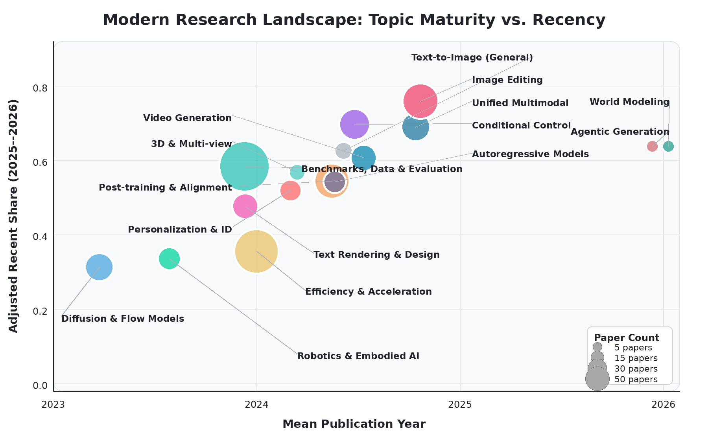
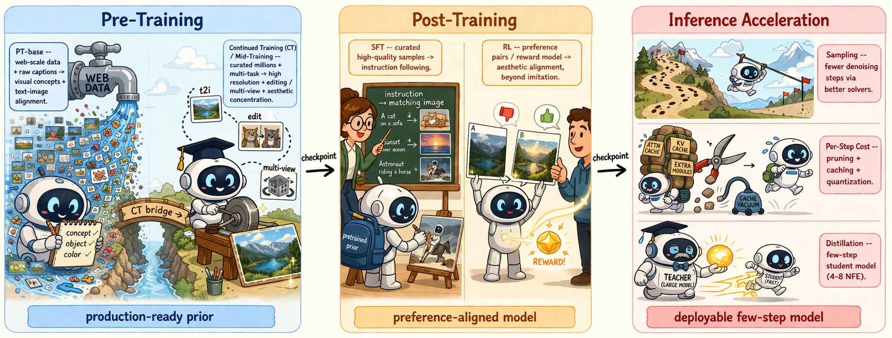

Atomic Generation
One-shot plausible rendering from prompts or latent codes.
Dynamic Project Page | Roadmap Paper Explorer
An evolution from atomic mapping to agentic world modeling.
This roadmap organizes modern visual generation around capabilities: controllable composition, persistent context, agentic interaction, and causal world simulation. Use the dynamic explorers below to retrieve papers, tasks, categories, and stress-test cases from the full roadmap bibliography.
Roadmap Lens
One-shot plausible rendering from prompts or latent codes.
Faithful control under layouts, references, and explicit constraints.
Multi-reference, multi-condition, and long-context visual coherence.
Planning, tool use, verification, rollback, and iterative refinement.
Causal, physical, and action-conditioned simulation of visual worlds.
Figures



Paper Explorer
Retrieval is fully client-side. Try paper titles, authors, BibTeX keys, methods, tasks, or capability words.
Click a year to focus the paper list.
Click a task cluster to retrieve related papers.
No papers found. Try a broader keyword or clear filters.
Stress-Test Explorer
Browse the in-the-wild probes from the roadmap: spatial constraints, physical causality, multi-turn drift, human-centric editing, restoration, real-world design, and structured vision tasks.
Citation
If you find this roadmap useful, please cite the project.
@misc{wu2026visualgenerationnewera,
title={Visual Generation in the New Era: An Evolution from Atomic Mapping to Agentic World Modeling},
author={Keming Wu and Zuhao Yang and Kaichen Zhang and Shizun Wang and Haowei Zhu and Sicong Leng and Zhongyu Yang and Qijie Wang and Sudong Wang and Ziting Wang and Zili Wang and Hui Zhang and Haonan Wang and Hang Zhou and Yifan Pu and Xingxuan Li and Fangneng Zhan and Bo Li and Lidong Bing and Yuxin Song and Ziwei Liu and Wenhu Chen and Jingdong Wang and Xinchao Wang and Xiaojuan Qi and Shijian Lu and Bin Wang},
year={2026},
eprint={2604.28185},
archivePrefix={arXiv},
primaryClass={cs.CV},
url={https://arxiv.org/abs/2604.28185},
}